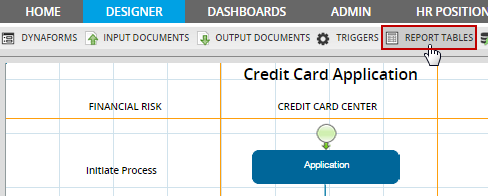
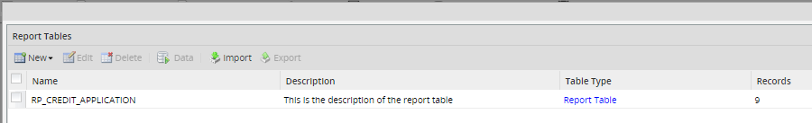
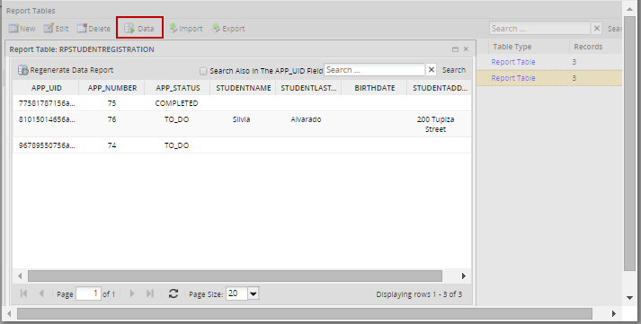
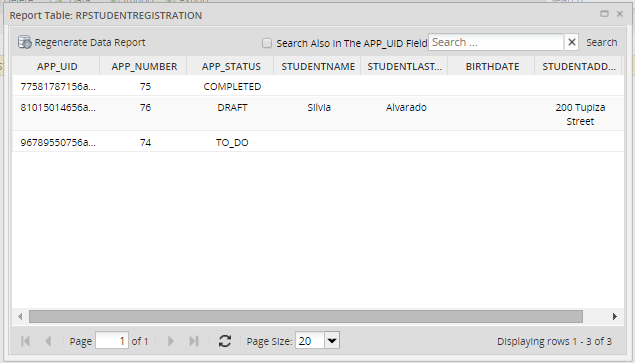
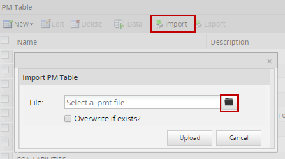
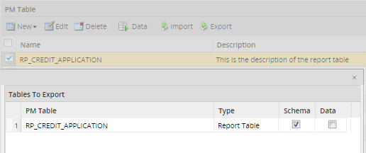

Overview
The information entered into DynaForm fields and case variables are stored as serialized strings, which are not easy to access with database queries. Report Tables are designed to export the data from cases either to the rp_<WORKSPACE> or the wf_<WORKSPACE> database, so that data can be easily accessed by standard SQL queries or external applications. Report Tables also allows case data to be easily queried in DynaForm fields and to be shared with external reporting tools such as Crystal Reports, Jasper Reports and Pentaho Reporting.
Each time a new case is created, another record will be added to the Report Table. That record will be updated each time a DynaForm is submitted in the case.
List of unsupported fields
The following fields cannot be used in Report Tables because they can contain multiple values and are saved differently:
- Listbox
Creating Report Tables
Create a report table inside a process by clicking on the option "Report Tables" inside the designer.

In the dialog box which appears, click on New and select the option New Report Table:

- Table Name: Enter the name of the Report Table.
- Description: Enter a brief description of the Report Table.
- Type: Select what type of DynaForm will be exported to the Report Table:
- Global: Export data entered in the fields in normal DynaForms and/or any case variables defined in triggers. This option allows the individual fields and case variables to be selected for export. If this option is selected, then select which fields and/or case variables defined in triggers will be exported. To select multiple fields, hold down on the CONTROL or SHIFT keys while clicking on the field names and click on < to add the selected fields to the Custom Column. Click on << to add all the fields to the Report Table. To remove a field from the Report Table, select it in the right-hand column and click on < or click on << to remove all fields from the Report Table.
Note: Grid fields and system variables will not appear in the list. - Grid: Export data entered in a grid form. This option will automatically export all the fields in the grid and does not allow individual fields to be selected. If this option is selected, then select the name of the grid (which is embedded in a master form) to export.
- Global: Export data entered in the fields in normal DynaForms and/or any case variables defined in triggers. This option allows the individual fields and case variables to be selected for export. If this option is selected, then select which fields and/or case variables defined in triggers will be exported. To select multiple fields, hold down on the CONTROL or SHIFT keys while clicking on the field names and click on < to add the selected fields to the Custom Column. Click on << to add all the fields to the Report Table. To remove a field from the Report Table, select it in the right-hand column and click on < or click on << to remove all fields from the Report Table.
- DB Connection: Select the database connection where the new Report Table will be stored:
- Workflow: The Report Table will be stored in the wf_<WORKSPACE> database for the current workspace.
- REPORT: The Report Table will be stored in the rp_<WORKSPACE> database for the current workispace.
- Another database: The Report Table can be stored in any database which has a Database Connection.
Note: It is only possible to create Report Tables in MySQL databases. The list will only shown connections to those databases even if the project has connections to other DBMS.
It is possible to change the order of the fields in the Report Table by dragging and dropping the fields to new locations in the list. It is also possible to change the Field Name, Field Label, Type, Size and Index properties of the fields in the Report Table. After selecting the fields to include in the Report Table, double click on a characteristic of the field to edit it.

Marking the Index option will index the field so it can be searched more rapidly. It is NOT recommended to reduce the size of VARCHAR fields, because VARCHAR fields only use as much space as needed to hold their data, so there is no benefit to reducing the size of the field.
By default, the field names are in upper case, but they can be changed to lower case. Remember that MySQL databases are case-sensitive by default in Linux/UNIX and case-insensitive by default in Windows. It is generally recommended to leave field names in upper case if designing processes which may need to be moved between Windows and Linux/UNIX servers.
Note: The fields in a Report Table cannot be one of the reserved words used by MySQL or PHP. In version 2.0.43 and later, ProcessMaker prevents reserved words from being used, but if using a previous version, make sure to not name the Report Table one of these "MySQL reserved words:
ALTER, CLOSE, COMMIT, CREATE, DECLARE, DELETE, DROP, FETCH, FUNCTION, GRANT, INDEX, INSERT,
OPEN, REVOKE, ROLLBACK, SELECT, SYNONYM, TABLE, UPDATE, VIEW, APP_UID, ROW, PMTABLE, TIME
Or one of these reserved words in PHP:
case, catch, cfunction, class, clone, const, continue, declare, default, do, else, elseif, enddeclare, endfor, endforeach,
endif, endswitch, endwhile, extends, final, for, foreach, function, global, goto, if, implements, interface, instanceof, private,
namespace, new, old_function, or, throw, protected, public, static, switch, xor, try, use, var, while
When done defining the new Report Table, click on Create and the new table will be created and populated with data from all the existing cases in the current process. The new table will be added to the list of available Report Tables.

Note: The new table which is stored in the database will have a prefix of PMT_. For example, if the Report Table is named CONTACT_INFO, it will be the PMT_CONTACT_INFO table in the database. Remember to include PMT_ in the table name when using it in SQL queries and external reports applications.
Viewing data in Report Tables
To view the data stored in a Report Table, go to the REPORT TABLES tab to see a list of the available report tables. First select a Report Table in the list and then click on the Data button in the menu. A window will open displaying the contents of the Report Table, which is the information filled in while running cases.
Searching data inside a Report Table
To find specific values inside a Report Tables, enter text to search for in the Search box, which is located in the upper right-hand corner of the Data window. Any kind of text or number can be searched, but it is not possible to use search criteria, such as < (less than), > (greater than), % (any number of characters), etc.

The following searches can be performed:
- APP_UID: Search for the case's unique ID number, which is 32 hexadecimal characters long. It is possible to search for only part of the number. For instance, the first 5 numbers in a UID:
55101 - APP_NUMBER: Search by a case number.
- APP_STATUS: Search by the case status, which can be
TO_DO,DRAFT,PAUSED,CANCELLED,COMPLETEDorDELETED - Other fields: Searches can be conducted in any of the other fields in the Report Table, except for date and datetime fields, which do not support searches.
Editing Report Tables
If a new field is added to a master DynaForm or its field name is changed, the definition of Report Table will not automatically update to include the new/changed field. The definition of the Report Table will have to be manually updated, to include the new/changed field. For example, using the trigger above, change the caseTask name to caseTaskID and also changing its name on the trigger to @@caseTaskID; then go to <>REPORT TABLES choose the name of the one created and then click on <>Edit the modified field will dispaly on the list of Dynaforms Fields as it is taken as a new field. Add it to the fields of the report table and remove the old field from the list.
If a field is added or changed in a grid form, then the existing Report Table will have to be deleted and then recreated to include the new/changed fields. From recent versions of ProcessMaker it is not necessary to delete and create the Report Table, the new field or the information will be updated automatically on the database.
Deleting Report Tables
To delete a Report Table, open the process and click on REPORT TABLES in the top menu. In the list, click on the Delete button for the Report Table to remove it from the list and delete its table in the rp_<WORKSPACE> or wf_<WORKSPACE> database, depending on the DB Connection previously chosen.
Regenerating Data Report
Use this option to manually update any data modified while running cases. Go to the list of Report Tables and choose the one to be regenerated by clicking on Data, the data for the specific Report Table will display, then click on Regenerate Data Report option on the upper side of the window.
Consider that while cases are being created and routed, data is created and updated in the report tables so it is not necessary to use the Regenerate Data Report each time.

Importing Report Tables
To import a Report Table, go to DESIGNER select the process where the report table will be imported, then click on REPORT TABLES option o the menu, the list of report tables available will display, choose one and click on Import a window will display click on the file button to select a report table form the computer. Remember that as well as PM tables, Report Tables have the .pmt extension.

Once the Report Table was imported automatically the corresponding table will be created on the wf_<WORKSPACE> or rp_<WORKSPACE> database, depending on the DB connection previously chosen
When importing if the option Overwrite if exist? is not checked and if the Report Table exists a new Report Table will be created with the current Date and Time, for example if The Report table PMT_RPT_CREDIT_CARD was created and the same is imported the Report Table will be created as PMT_RPT_CREDIT_CARD_20120824112519 where the name is divided as:
- Date: 20120824: Year-Month-Day
- Time: Hour-Minute-Seconds
Exporting Report Tables
To export a Report Table, go to DESIGNER select the process where the report table will be exported, then click on REPORT TABLES option on the menu, the list of report tables available will display, choose one and click on Export a window will display where there are two options to select at the moment of exporting the Report Table:
- Schema: checking this option Report Table will be exported with the structure of the fields but no data.
- Data: Data export for Report Tables is not allowed, since this data come from Cases and information stored on cases can't be exported.
Remember that as well as PM tables, Report Tables have the .pmt extension.

Exporting System Variables
System variables, such as @@TASK or @@USER_LOGGED, are not available for export in Report Tables. These values may be useful if needing to do queries based upon a particular user, task, process, etc.
To export a system variable, create a trigger which will assign the value of a system variable to a case variable. For example:
@@caseUserName = @@USR_USERNAME;
@%caseIndex = @%INDEX;
@@caseTask = @@TASK;
@@caseProcess = @@PROCESS;
Then, set the trigger to fire at various points in the process where the Export Table should be updated with new values for the system variables. Remember that the value of system variables change over the course of a case, so the trigger should be fired whenever the new values need to be exported to the Report Table. After defining the trigger, change the definition of a Report Table to include the new case variables which were defined in the the trigger.
Querying Report Tables
Report Tables can be queried with the Sql property in DynaForm fields or by calling the executeQuery() function in triggers.
To query a Report Table in a DynaForm field, first set the SQL Connection property for the field to the database where the Report Table is stored. If it is in the wf_<WORKSPACE> database for the current workspace, then either set it to workflow or leave it blank. If found in the rp_<WORKSPACE> database for the current workspace, then select report. For any other database (including databases in other workspaces), first create a Database Connection to that database, and then select it in the Sql Connection property.
Querying Report Tables in DynaForms
In the field's Sql property enter a SELECT statement to query the Report Table. Remember that the Report Table has the prefix PMT_ in its table name. If populating a dropdown, listbox, suggest box, checkgroup or radiogroup, remember that the SQL query needs to return two fields, where the first field is the value and the second field is the label for each option.
Example:
Get a list of all the clients used in previous cases for a suggest box, so that users do not have to remember the full name of clients when filling in a form. If the Report Table is named CLIENTS and has the fields CLT_ID, CLT_FIRSTNAME and CLT_LASTNAME, then the following query can be used to populate the suggest box:
DISTINCT is used to eliminate duplicates and the second field is a concatenation of the client's first and last names, so both can be displayed in the suggest box.
Querying Report Tables in Triggers
The executeQuery() function can be used to query Report Tables in Triggers. In the Report Table, each case is stored as a separate record and the table has the APP_UID, APP_NUMBER and APP_STATUS fields, so that it is possible to search for the data from specific cases.
Example:
This example shows how to populate a grid with data from the current case and from all the other cases whose status is currently TO_DO. It queries a Report Table named PRODUCTS which has the fields PRO_NAME, PRO_TYPE and PRO_DESC. It is stored in a remote database which has a Database Connection with the UID of "17848610856943f64e405e8058194105".
First, create a grid named "products", which contains the textbox fields "productName", "productType" and "productDescription". Then, create a trigger with the following code to populate the @=products variable which is used by this grid:
$currentCase = @@APPLICATION;
$query = "SELECT PRO_NAME AS productName, PRO_TYPE AS productType, PRO_DESC AS productDescription
FROM PMT_PRODUCTS WHERE APP_UID = '$currentCase' OR APP_STATUS = 'TO_DO' ";
@=products = executeQuery($query, $db);
Note that it is not possible to insert case variables in the middle of strings like normal PHP variables, so first assign the case ID in @@APPLICATION to the $currentCase variable, so it can be inserted in the SQL query. Because the fields in the Report Table have different names than the fields in the grid, they have to be renamed using AS. Remember that field names in grids are case sensitive, so "productType" is different than "ProductType" and "PRODUCTTYPE".
The database query returns an associative array of associative arrays, which is also how grids are stored in ProcessMaker. For example, this database query might return the following data which is placed in the grid:
'1' => array("productName" => "E-Z PencilMate", "productType" => "Office supplies", "productDescription" => "Holds multiple pencils"),
'2' => array("productName" => "Brite 30W Lamp", "productType" => "Office furniture", "productDescription" => "Upright lamp with shade"),
'3' => array("productName" => "Sleeptite pillow", "productType" => "Bed assessory", "productDescription" => "Goose feather pillow")
)
Set the above trigger to fire before the DynaForm which contains the "products" grid. When the DynaForm is displayed while running a case, the grid should be populated with the data from the current case and from previous cases with "TO_DO" status.
Querying the current case in DynaForms
If needing to use the unique ID of the current case in an SQL query of a Report Table, create a hidden field in the DynaForm which is named "APPLICATION". When the DynaForm is rendered while running a case, the unique ID of the current case which is stored in the @@APPLICATION system variable will automatically be placed in the "APPLICATION" field where it can be used in SQL queries.
Example:
A textarea field needs to display all the users who have worked on the current case in a dropdown box, so that the current user can select the user who will be assigned to the next task in the process. The following SQL query looks up all the users who have worked on the current case, by using the current case's UID which is stored in the "APPLICATION" hidden field.
FROM USERS U, APP_DELEGATION AD WHERE AD.APP_UID = @@APPLICATION AND AD.USR_UID = U.USR_UID